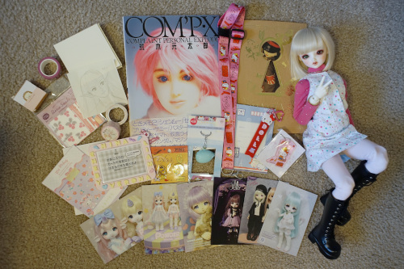
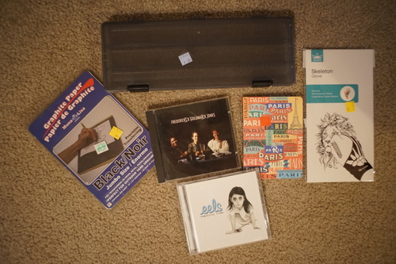

It's been a while since my last blog post huh?? They haven't been able to kill me yet!
Mostly what I've been up to is singing old Sonny Moore/Skrillex songs. I'm not good at it yet but I'm getting lots of practice in to the dismay of everyone around me.
Very blessed hors sent me another package full of wonderful gifts! I love her ;A; The Sanrio x Texas merch is the best merch I've ever seen in my life. She even drew me a Rio!!
My Kuru Toga pipe slide seems to have kicked it. Rest in Peace, my favorite pencil. Will be missed greatly. I can't remember when I got it, but it was after I got my Rilakkuma one in 2018.
I finished Furuba and I loved it!! I'm gonna have to buy the manga... it was so good! I speedran all the books I had and ran back to the library to get the rest. I'm not so sure about one of the twists and I think the series would have been better without it. Maybe it would have been more exciting in the past.
I've taken so many dollfoto since the last blog post. Here's a few samplings as advertisements to go to their gallery pages:


I managed to sew Rio a kimono, Cheby a haori and a shirt, and Liam some shorts out of Ryan's old shorts. It was a sewing marathon for a few days! I'm a lot happier with Rio now. He's been neglected for years, but he's starting to look a lot better. I still need to buy him a nicer pair of eyes.
And now... 3 (THREE) shopping trips from the thrift store.
Finally something long enough to hold paint brushes. I was getting tired of leaving them all out on display.
Wikipedia said this was synthpop so I decided to give it a chance. It's not bad, but I also don't think it's exciting at all. It's a pass.
Unlined pages
I'm larping as an artist!
Ryan needed it!
fits Kikipop so her pose is much cuter in my detolf now!
You bet I pick this trash up!!
I HAD NO IDEA THIS EXISTED WHERE IS VOLUME 1!!!!!
A DMP manga that is not BL and is a one off? I'm very interested.
I was very upset when I picked him up and found he only had one leg! I found the other leg though so he'll be okay. He's missing his wooden button but that's not the end of the world.
Now I am willing to sacrifice one to pumpkin carving.